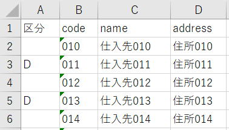

データの削除（DELETE）
エクセルVBAでデータベースを扱うためのSQL入門です。
前回までにやってきたことを大きく分けると、
・テーブル作成
・データ挿入
・データ取得
・データ更新
データベースにテーブルを作成し、データを入れて、データを取り出し、データを更新しました。
いろいろとデータベースを扱う事ができるようになりましたが、
やはり、削除できないと困ってしまいます。
今回は、DELETEについて解説します。
DELETEの構文
[ WHERE 論理式]
DELETEの使用例
DELETE FROM m_customer
WHERE code LIKE '00%'
codeには、'001'から'100'を入れました。
したがって、LIKE '00%'は、'001'から'009'になります。
| LIKE | メタ文字によるパターンマッチングを行います
|
SELECTで取得→シートで削除行を指定→DELETEで削除
Sub SelectALL()
Dim clsDB As New clsSQLite
clsDB.DataBase = "C:\SQLite3\sample.db"
Dim ws As Worksheet
Set ws = ActiveSheet
Dim sSql As String
sSql = ""
sSql = sSql & "SELECT '' AS 区分,*"
sSql = sSql & " FROM m_customer"
sSql = sSql & " ORDER BY code"
If Not clsDB.SheetFromRecordset(sSql, ws.Range("A1"), Clear, True) Then
MsgBox clsDB.ErrMsg
Exit Sub
End If
Set clsDB = Nothing
End Sub
m_customerの全データをシートに出力しています。
先頭列として、空白文字を「区分」として出力しています。
このように、空文字、NULL、固定文字を新規カラムとして自由に追加することができます。
A列「区分」に文字を入れた時、当該行に色を付ける等で目立たせます。
こういう工夫をすることで、うっかりミスを少しでも減らすことは大切です。
※B列のcodeは変更してはダメです。
キーが変わってしまったら削除できませんので。
ここではあくまで、DELETEのサンプル&テストのため、簡易的な作りにしています。

・A列の「区分」が、"D"または"d"のとき削除します。
・日付、数値、文字列は自動判別しています。
・文字列の ' は、 '' でエスケープ処理しています。
Sub SelectDelete()
Dim clsDB As New clsSQLite
clsDB.DataBase = "C:\SQLite3\sample.db"
Dim sSql As String
Dim i As Long, j As Long
Dim maxRow As Long
Dim ws As Worksheet
Set ws = ActiveSheet
With ws
maxRow = ws.Cells(ws.Rows.Count, 1).End(xlUp).Row
For i = 2 To maxRow
If UCase(.Cells(i, 1) = "D") Then
sSql = ""
sSql = sSql & "DELETE FROM m_customer" & vbCrLf
sSql = sSql & " WHERE "
sSql = sSql & .Cells(1, "B")
sSql = sSql & " = "
sSql = sSql & getValue4Sql(.Cells(i, "B"))
If Not clsDB.ExecuteNonQuery(sSql) Then
MsgBox clsDB.ErrMsg
Exit Sub
End If
End If
Next
End With
Set clsDB = Nothing
End Sub
'SQL用にセルのValueを編集
Function getValue4Sql(ByVal aRange As Range) As String
Select Case TypeName(aRange)
Case "Date"
getValue4Sql = dateFormat(aRange.Value)
Case "Double"
getValue4Sql = aRange.Value
Case Else
getValue4Sql = addQuote(aRange.Value)
End Select
End Function
'SQLiteは日付型がないので文字列として格納
Function dateFormat(ByVal var As Variant) As String
dateFormat = addQuote(Format(var, "yyyy-mm-dd"))
End Function
'シングルクオーテーションをエスケープ処理
Function addQuote(ByVal str As String, _
Optional ByVal aQuote As String = "'") As String
If str = "" Then
addQuote = "NULL"
Else
addQuote = aQuote & Replace(str, "'", "''") & aQuote
End If
End Function
このVBAの、SelectDelete を実行すると、
以下のようなSQLが（A列で削除指定した）行数分発行されます。
DELETE FROM m_customer
WHERE code = '011'
VBA実行が終了したら、再度最初のデータ取得、
SelectALL これを実行してデータが削除されたことを確認します。
データの削除（DELETE）の最後に
実務的には、データの削除は様々な注意点が出てくるものです。
特にマスタは使わなくなったからと言って削除してしまうと、過去のトランザクションデータの情報が取得できなくなってしまいます。
マスタの場合は、テーブルから削除するのではなく、削除フラグや削除日で対応することが多くなります。
SQL入門でも、先々にはそのようなVBAも紹介できればと思っていますが、今はまだSQLの基本解説を優先しています。
同じテーマ「SQL入門」の記事
テーブルを結合して取得（INNER JOIN,OUTER JOIN）
複数のSELECT結果を統合（UNION,UNION ALL）
データの更新（UPDATE）
データの削除（DELETE）
他のテーブルのデータで追加/更新/削除
インデックスを作成して高速化（CREATE INDEX）
トランザクション処理
VBAクラスの全コード：トランザクション処理
サブクエリ（副問合せ）
サブクエリのネストとSQLコメント&整形
WITH句（共通テーブル式）
新着記事NEW ・・・新着記事一覧を見る
VBA100本ノック 100本目：WEBから100本ノックのリストを取得｜VBA練習問題（3月3日）
VBA100本ノック 99本目：自動席替え（行列と前後左右が全て違うように）｜VBA練習問題（3月2日）
VBA100本ノック 98本目：席替えルールが守られているか確認｜VBA練習問題（3月1日）
VBA100本ノック 97本目：Accessデータを取得（グループ集計）｜VBA練習問題（2月27日）
VBA100本ノック 96本目：Accessデータを取得（マスタ結合&抽出）｜VBA練習問題（2月26日）
VBA100本ノック 95本目：図形のテキストを検索するフォーム作成｜VBA練習問題（2月24日）
VBA100本ノック 94本目：表範囲からHTMLのtableタグを作成｜VBA練習問題（2月23日）
VBA100本ノック 93本目：複数ブックを連結して再分割｜VBA練習問題（2月22日）
VBA100本ノック 92本目：セルの色を16進で返す関数｜VBA練習問題（2月20日）
VBA100本ノック 91本目：時間計算（残業時間の月間合計）｜VBA練習問題（2月19日）
アクセスランキング ・・・ ランキング一覧を見る
1.最終行の取得（End,Rows.Count）｜VBA入門
2.RangeとCellsの使い方｜VBA入門
3.変数宣言のDimとデータ型｜VBA入門
4.マクロって何？VBAって何？｜VBA入門
5.Range以外の指定方法（Cells,Rows,Columns）｜VBA入門
6.セルのコピー&値の貼り付け（PasteSpecial）｜VBA入門
7.繰り返し処理（For Next)｜VBA入門
8.セルに文字を入れるとは（Range,Value）｜VBA入門
9.マクロはどこに書くの（VBEの起動）｜VBA入門
10.とにかく書いてみよう（Sub,End Sub）｜VBA入門
このサイトがお役に立ちましたら「シェア」「Bookmark」をお願いいたします。
記述には細心の注意をしたつもりですが、
間違いやご指摘がありましたら、「お問い合わせ」からお知らせいただけると幸いです。
掲載のVBAコードは動作を保証するものではなく、あくまでVBA学習のサンプルとして掲載しています。
掲載のVBAコードは自己責任でご使用ください。万一データ破損等の損害が発生しても責任は負いません。